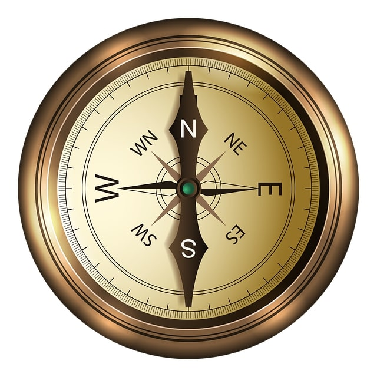

Please click on the subject to see the material for the lesson. Click again to close lesson.
Compass

Compasses have been used for over 2000 years.
A compass is an important tool for finding direction. It helps you to find your way when you are using a map.
There are four main points of the compass: north, east, south and west. These are called compass points.
Can you think of an easy way to remember the order of the compass points? For example:
Never Eat Silly Worms or Naughty Elephants Squirt Water
Using a Compass:
The needle on a compass moves freely around the dial, always searching for north. Once the compass points to north, this helps someone to see where east, south and west are located.
Some compasses can be divided into further four with these letters namely: NE - North East, NW - North West, SE - South East and SW - South West.
Click on button to proceed directly to quiz.
Balanced Diet - Healthy Eating
Eating a balanced diet is important for your health. If you eat food from each of the five food groups, you’ll be getting a fantastic mix of the best nutrients and vitamins!
Carbohydrates
Carbohydrates give you energy, calcium and B vitamins. Some examples are pasta, rice, oats, potatoes and sweet potatoes or noodles, couscous and bread. Breakfast cereals are also a carbohydrate and many contain extra iron too. You should eat 3 to 5 servings per day.
Protein
Proteins are building blocks for the body because they help it grow and repair itself. Protein is found in meat, fish and eggs. Nuts, beans, lentils, peas, Quorn and soya are great sources of vegetable protein. Additionally, these foods also provide you with iron and other vitamins and minerals.You should eat 2-3 servings of these per day.
Dairy
Dairy products are packed with calcium, protein and vitamins such as vitamins A, D and B12. These are important because they keep your bones and teeth healthy. Our bodies easily absorb the calcium from dairy products. Some examples are milk, yoghurt, fromage frais and cheese. You should aim to eat 3 servings per day.
Fruit and Vegetables
Fruit and vegetables are brilliant for your diet. They’re full of health-boosting vitamins, antioxidants and fibre. Eating these keep you feeling full and they help keep your digestive system healthy. Furthermore, they’re low in calories. If you eat a wide variety of fruit and vegetables, you’ll be getting a range of the important nutrients that you need. You should eat at least 5 servings of these per day.
Fats and Sugar
It’s important not to have too many foods from this group because they give us a lot of energy from calories but not much nutrition. Try to keep foods such as butter, margarine, cooking oils and salad dressings to a minimum and save chocolate, crisps, sugary soft drinks, sweets, jam, cream, cakes, pudding, biscuits and pastries as an occasional treat. Too much of this food group can damage your teeth or make you gain weight!
Click on button to proceed directly to quiz.
Maths
Please click on below links to see the videos from Oxford Owl.
Click on button to proceed directly to quiz.
Click on appropriate button if you wish to proceed.